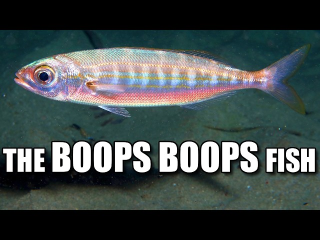

Fish Description
Humuhumunukunukuāpuaʻa

Habitat: Coral reefs in the tropical Pacific Ocean, especially around Hawaii.
Boops boops

Habitat: The Mediterranean Sea, the Black Sea, and the eastern Atlantic Ocean.
Royal Dottyback

Yellow and purple 小 fish
Baby watch it burn, send death to ice elation
Odonus niger

Habitat: Tropical coral reefs throughout the Indo-Pacific region.
Old Wife

Habitat: Coastal waters and rocky reefs around southern Australia.